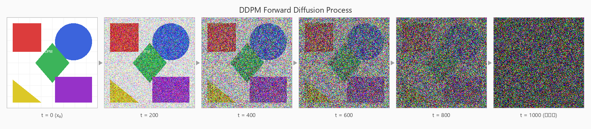
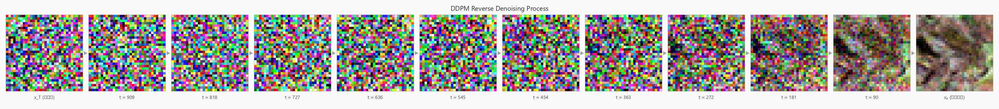

多模态 AI
让 AI 不只懂文字，还能看图、说话、画画。从 Vision Transformer 到 CLIP，从扩散模型到 DALL·E 2——探索 Transformer 如何从文本扩展到视觉，以及生成式 AI 如何"从噪声中雕出图像"。
Vision Transformer
图像即序列：Transformer 看世界
CLIP 图文对比
连接视觉与语言的桥梁
ClipCap 图生文
CLIP + GPT-2 = 看图说话
扩散模型原理
DDPM · 正向加噪 · 预测噪声
反向去噪实践
郎之万动力学 · 加速采样
条件扩散
控制生成内容
DALL·E 2
文生图完整实现
Vision Transformer — 图像即序列
🎯 导读
2021 年论文《An Image is Worth 16×16 Words》。关键创新：把图像切分成固定大小的补丁（Patch），每个补丁当成一个"词"，然后用标准 Transformer 编码器处理——和文本 Transformer 一模一样的架构，只是输入从"词序列"变成了"像素块序列"。
核心思想
一张 224×224 的图像，切成 16×16 的补丁，得到 14×14=196 个补丁。每个补丁通过卷积投影映射到嵌入维度，然后在序列开头加一个可学习的 [CLS] token（用于聚合全局信息做分类），再加位置编码。
class PatchEmbedding(nn.Module): def __init__(self, d_model, img_size, patch_size, n_channels): super().__init__() self.linear_project = nn.Conv2d( n_channels, # 输入通道（RGB=3） d_model, # 输出维度 kernel_size=patch_size, stride=patch_size ) def forward(self, x): # (B, C, H, W) → (B, d_model, P_col, P_row) → (B, P, d_model) x = self.linear_project(x) x = x.flatten(2).transpose(1, 2) return x
CNN 通过局部卷积提取特征，ViT 通过全局自注意力提取特征。ViT 的优势在于能捕捉长距离依赖——图像左上角的像素能看到右下角的像素。但需要更多数据才能超越 CNN。
CLIP — 图文对比学习
🎯 导读
CLIP 是一场革命：它允许通过"预测哪些图像和文本配对在一起"来识别开放世界中的对象，不再局限于固定类别。一段文字"一只戴着墨镜的猫"就能找到对应图像——不需要事先"训练过猫这个类别"。
核心原理：对比学习
CLIP 同时训练图像编码器（ViT/ResNet）和文本编码器（Transformer），使匹配的图文对在嵌入空间中距离近、不匹配的距离远。
# CLIP 对比学习（简化） # batch 中 N 个图文对 image_features = image_encoder(images) # (N, D) text_features = text_encoder(texts) # (N, D) # 计算相似度矩阵 (N, N)，对角线是正样本 logits = image_features @ text_features.T / temperature labels = torch.arange(N) loss = cross_entropy(logits, labels) + cross_entropy(logits.T, labels)
零样本分类 — CLIP 最酷的能力
无需训练即可分类任意类别。将类别名称构造成文本（"a photo of a cat"），计算图像与每个文本的相似度，取最大的即为分类结果。你几乎可以定义任意数量的类别，而且可以随时新增。
在 ClipCap 中驱动图生文，在 DALL·E 2 中提供图文嵌入空间。理解 CLIP 是理解后续所有多模态模型的前提。
ClipCap — 图生文
🎯 导读
ClipCap 是 CLIP 和 GPT-2 的巧妙结合：CLIP 负责"看懂"图像，GPT-2 负责"说出来"。关键挑战是两者的嵌入空间不匹配——ClipCap 用一个映射网络（MLP 或 Transformer）做"翻译"。
# ClipCap 工作流程
输入图片 → CLIP → 图像嵌入
↓
Mapping Network (MLP)
↓
前缀嵌入 (Prefix Embeddings)
↓
GPT-2 → 逐 token 生成标题
↓
"A drawing of a blue car"两种变体
- 微调 GPT-2：用 MLP 作为映射网络，GPT-2 和 MLP 都训练——效果好但改动大
- 不微调 GPT-2：用 Transformer 作为映射网络，只训练映射网络——灵活但效果略弱
扩散模型原理 — 从噪声中学习
以下 6 帧使用 DDPM 精确数学公式 xₜ = √ᾱₜ·x₀ + √(1−ᾱₜ)·ε 生成，噪声来自固定随机种子，Cosine 噪声调度（Improved DDPM）。这是正向扩散的确定性闭式解。

来源：DDPM 论文 Figure 3 风格 (Ho et al., NeurIPS 2020) · Cosine noise schedule (Nichol & Dhariwal 2021)
以下 6 帧来自真实预训练 DDPM 模型 (google/ddpm-cifar10-32) 的逐步去噪过程。从 x_T ~ N(0,I) 出发，经 50 步 DDPM 反向采样逐步还原为清晰图像。

来源：真实 DDPM 去噪过程 (Ho et al., NeurIPS 2020) · 模型: google/ddpm-cifar10-32 · seed=42 · 50 inference steps
🌰 先讲个直觉
往一杯清水里滴一滴黄色墨水。墨水慢慢散开，越散越淡，最后整杯水变成均匀的淡黄色——你再也看不出墨水最初滴在哪儿了。这个"由清晰到混沌"的过程叫扩散。
现在反过来想：能不能让这杯均匀的黄水自己变回"一滴墨水 + 一杯清水"？凭空做几乎不可能——混沌容易，还原难。
扩散模型干的，就是逆天而行：训练一台机器，学会把"混沌"一步步还原回"清晰"。
把"墨水扩散"换成"图片"：拿一张清晰小狗照片，一点点往上撒"雪花点"（随机噪声），撒到最后变成纯雪花屏。然后训练一个神经网络学会"擦雪花"——给它一屏纯雪花，它能一步步擦出一张全新清晰的图。
那为什么非要"先把好好的图弄坏、再学着修好"？因为这一来一回，模型就在每一步里学会了"清晰的图长什么样、雪花该怎么擦"。学透之后，给它纯雪花也能擦出一张图——这就是 AI 生成图片的全部奥秘。
正向扩散：马尔可夫加噪链
正向过程是一个马尔可夫链——每步只依赖上一步：
βₜ 是噪声调度（noise schedule），从 β₁≈10⁻⁴ 线性增加到 β_T≈0.02。T 通常取 1000。当 T→∞ 时，x_T ~ N(0, I)——纯白噪声。
一步到位加噪（闭式公式）
利用重参数化技巧，不用循环 T 次，一步就能得到任意时间步的噪声图：
xₜ = √ᾱₜ · x₀ + √(1−ᾱₜ) · ε其中 ε ~ N(0, I)，αₜ = 1−βₜ，ᾱₜ = ∏ᵢ₌₁ᵗ αᵢ。训练时随机采样 t，直接得到 (x₀, xₜ) 对——这比迭代 T 次快了 T 倍。完整推导见正向扩散闭式公式。
DDPM：预测噪声而非图像
DDPM（Denoising Diffusion Probabilistic Models）的关键巧思：让模型预测噪声 ε，而不是直接预测 x₀。原因很简单——"找出被加了多少噪声"比"凭空画出干净图"简单得多：
# 训练目标：最小化噪声预测误差 for images, _ in dataloader: t = torch.randint(1, T+1, (len(images),)) # 每张图随机选时间步 x_noisy, noise = add_noise(images, t) # 加噪，记下真噪声 noise_pred = model(x_noisy, t) # 模型预测噪声 loss = F.mse_loss(noise, noise_pred) # L_simple: 预测 vs 真实 loss.backward(); optimizer.step()
这个简单的 MSE 损失——被称为 L_simple——经过推导等价于变分下界（ELBO）的加权版本。权重更大的时间步（噪声多的中间段）被更重视，这正是 DDPM 训练效果好的数学原因。
为什么用 U-Net？
U-Net 长得像字母"U"：左半边逐层缩小（抓大局），底部压成浓缩特征，右半边逐层放大（补细节），中间有跳跃连接把精细位置信息抄近路传递。输入输出同尺寸、都需要逐像素精确预测——和"逐像素预测噪声"天然匹配。
扩散模型可以看作一个分层 VAE——T 步潜在变量 x₁...x_T，x₀ 是观测图像。训练目标是最小化负 ELBO：−log p(x₀) ≤ E_q[ −log p(x_T) − Σₜ log(pθ(xₜ₋₁|xₜ)/q(xₜ|xₜ₋₁)) ]。经过化简，这个 ELBO 分解为 T 个去噪步骤的 KL 散度之和——每一步都在学"怎么擦掉一步噪声"。L_simple 就是忽略加权系数的简化版，实践中效果更好。
扩散模型实践 — 反向去噪与加速采样
🎯 导读
上一章讲了"怎么把图弄花"和"怎么学擦花"。这一章讲"怎么从纯噪声一步步擦出图来"——反向过程的数学、郎之万动力学的理论根基、以及怎么把 1000 步压缩到几十步。
反向扩散：从噪声中重建
反向过程同样是一个马尔可夫链，但每步用神经网络 εθ 预测噪声来引导：
μθ(xₜ, t) = (1/√αₜ) · (xₜ − (βₜ/√(1−ᾱₜ)) · εθ(xₜ, t))
从 x_T ~ N(0,I) 出发，迭代 T 次去噪，最终得到 x₀——一张全新生成的图像。
郎之万动力学视角
扩散模型的反向过程可以看作离散化的郎之万动力学：
神经网络 εθ 实际上在估计得分函数（score function）∇log p(xₜ)。每步先沿得分方向爬坡（让图像更像"真的"），再加一点噪声防止陷入局部峰值。这就是得分匹配视角。详见郎之万动力学推导。
灵魂三问
Q: 为什么一个网络能处理所有去噪步？ 每一步要干的事其实一样——输入带噪图，输出噪声。用同一个网络，把时间步 t 也作为输入喂给它。t=900（满屏雪花）→ 大刀阔斧擦；t=5（挺清楚了）→ 小心翼翼擦。
Q: 总共分几步？ 步数多（1000）→ 相邻步差别小，质量高但慢；步数少（50）→ 快但质量打折。
Q: 为什么 AI 画图比聊天慢？ 生成一张图要把 U-Net 跑几十上百次，而聊天一个 token 跑一次。加速采样是兵家必争之地：
- DDIM：去马尔可夫化，用非马尔可夫跳步采样——50 步质量接近 1000 步
- LCM（潜在一致性模型）：蒸馏训练，4~8 步即可出图
- DPMSolver：用 ODE 数值解替代随机采样，20 步出高质量图
🧠 产品经理视角
能做：文生图、图生图、修图（inpainting）、超分辨率、风格迁移，甚至生成视频/3D/音频——本质都是"在噪声里雕出想要的东西"。
坑：① 慢且贵（多步迭代）；② 可控性差（同一提示词每次出图不同，需 seed/ControlNet 约束）；③ 细节翻车（手指、文字常画错）；④ 版权风险（训练数据来源）。
📌 一句话记住扩散模型：训练一个网络学会"擦雪花"——正向加噪是免费的练习题，反向去噪是真本事。给它一屏纯雪花，它能一步步擦出一张全新的图。
条件扩散模型 — 控制生成内容
🎯 导读
普通扩散模型只能随机生成图。条件扩散模型让我们能控制生成内容——给定标签、文本或低分辨率图像，生成对应的图像。从 p(x) 到 p(x|y)。
添加条件的方法
将条件 y 添加到神经网络输入中。y 可以是：标签（通过嵌入层）、文本（通过 CLIP 编码器）、图像（通过编码器）。
# 条件扩散模型：噪声预测网络接收额外条件 ε_θ(xₜ, t, y) # y 可以是标签、文本嵌入等 # 标签条件示例 label_emb = embedding(y) # 标签 → 向量 time_emb = sinusoidal(t) # 时间步 → 向量 condition = label_emb + time_emb
两种引导方式
分类器指引：在反向每步用分类器梯度引导方向。
无分类器指引（CFG）：同时训练有条件和无条件模型，推理时用两者差值引导——这是 Stable Diffusion 的方法，更简单有效。
完整推导见条件扩散p(x|y)推导。
Stable Diffusion
条件扩散模型的里程碑：在潜在空间（而非像素空间）进行扩散，大幅降低计算成本，使消费级 GPU 也能生成高质量图像。真正的"从文字到图像"靠的是条件扩散——在去噪时额外塞进文本嵌入来引导生成方向。
DALL·E 2 — 文生图完整实现
🎯 导读
DALL·E 2 是条件扩散模型的应用巅峰：输入文本提示词，输出图像。它使用 unCLIP 方法，训练三个模型协同工作。精髓在于两阶段架构：先"翻译"文本为图像条件，再根据条件生成图像。
三个模型的架构
# DALL·E 2 = CLIP + 先验模型 + 条件扩散模型 1. CLIP 模型 → 学习图文对齐的嵌入空间 → 训练完毕后冻结——是前两个模型的基础 2. 先验模型 (Prior: Decoder-Only Transformer) → 输入: 文本 + CLIP文本嵌入 + 时间步 + 噪声CLIP图像嵌入 → 输出: CLIP图像嵌入 → 作用: 把"文本"翻译成"图像条件" 3. 条件扩散模型 (Decoder: U-Net) → 输入: CLIP图像嵌入 + 噪声图像 + 时间步 → 输出: 去噪后的图像 → 作用: 根据条件生成最终图像
先验模型是对 CLIP 图像嵌入进行扩散，而不是对图像本身！这是一个极易混淆的点——先验模型在嵌入空间里扩散，Decoder 在像素空间里扩散。
完整生成流程
# DALL·E 2 文生图流程 输入: "A drawing of a blue car" Step 1: 文本 → 冻结的 CLIP → CLIP 文本嵌入 Step 2: CLIP文本嵌入 → 先验模型(扩散) → CLIP图像嵌入 （先验用扩散模型在嵌入空间中去噪，产生图像条件） Step 3: CLIP图像嵌入 + 纯噪声 → 条件扩散模型(去噪) → 🖼️ 输出: 一辆蓝色汽车的图像
为什么用两阶段？
这种解耦设计让每个子模型专注做好自己的任务：先验专注"语义理解"（文字→图像构思），Decoder 专注"图像生成"（构思→像素）。两者分开训练和优化，整体质量远超端到端方法。
两阶段架构是整个系统的灵魂：先用先验模型将文本"翻译"为图像条件（CLIP 图像嵌入），再用扩散模型根据条件生成图像。CLIP 是基石、先验是翻译官、扩散模型是画家——三者缺一不可。
📌 一句话记住多模态：Transformer 从文本扩展到视觉（ViT）→ CLIP 打通图文壁垒 → 扩散模型实现生成（先撒雪花再擦掉）→ DALL·E 2 用两阶段架构把文字变成图像。关键是 CLIP 作为图文理解的枢纽。